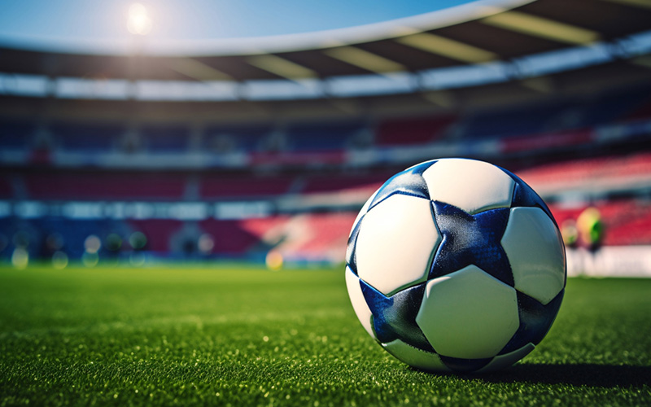
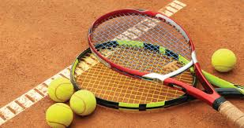

Cricket
Cricket is a bat-and-ball game played between two teams of eleven players on a field...

Football
Football is a team sport played between two teams of eleven players each...

Tennis
Tennis is a racket sport that can be played individually against a single opponent...

Basketball
Basketball is a team sport where two teams, typically of five players each, compete to score...